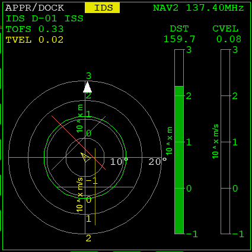

Part6 ドッキング
RCSを使ってISSとドッキングします。
ドッキングポートの正面に出る
キーボードのKを押す。
ノーズコーンを開く。
RCSを噴射して移動する。
テンキー/でRCSを切り替える。
| RCS ROT | 機体を回転させる | 2or8 | ピッチ |
| 4or6 | ロール | ||
| 1or3 | ヨー | ||
| RCS LIN | 機体を平行移動させる | 2or8 | 上下 |
| 1or3 | 左右 | ||
| 6or9 | 前後 | ||
| KILL ROT | 回転を止める | 5 |
\( \bigoplus \) のマーカーが進行方向の目安になる。
高速で移動しようとするより、タイムワープで移動時間を省略したほうがよい。
ドッキングポートまでの経路に表示された、長方形の枠を基準に上下を決める。
Delta Gliderの場合、線が二重になっている側が上になる。
正面に出たら、ドッキングポートに機首を向ける。
ISSの回転を止める
F3キーを押す。
機体選択メニューを開く。
ISSをクリックして選択。
OKorApplyをクリック。
1枚目がOrbiter2010、2枚目が2016
これで、ISSを操作できるようになる。
テンキー5を押す。
自分の宇宙船に戻る。
GL-01を選択する。
Docking MFDでNAVをクリック。
F8キーでコクピットの切り替え。
静止しているように見える宇宙ステーションも、ゆっくり回転していることがある。
これを止めておかないと、ドッキングの難易度が上がる。
Docking MFD
ドッキングポートの軸線上に移動し、機体の向きを一致させる。
前進してドッキングする。

| RCS ROT | 赤 or 白の×を、中央に移動させる | 2or8 |
| 1or3 | ||
| 赤 or 白の▲を、上に移動させる | 4or6 | |
| RCS LIN | 黄色い十字線を、中央に移動させる | 2or8 |
| 1or3 | ||
| ドッキングポートに接近・減速する | 6or9 |
これらの要素を1つずつ修正していく。
RCS ROTとLINを切り替えながら操作する。
Ctrlを同時押しすると、RCSの出力を抑えて細かい操作ができる。
HUD上で \( \bigoplus \) のマーカーを動かすと、Docking MFDの表示も変化する。
これら2つの反応を見比べるとわかりやすい。
ドッキング
ドッキングポートが近づいてきたら減速する。
CVELを0.1以下に抑える。
ドッキングポートの向きが合っていれば、ISSに接触すると自動で固定される。